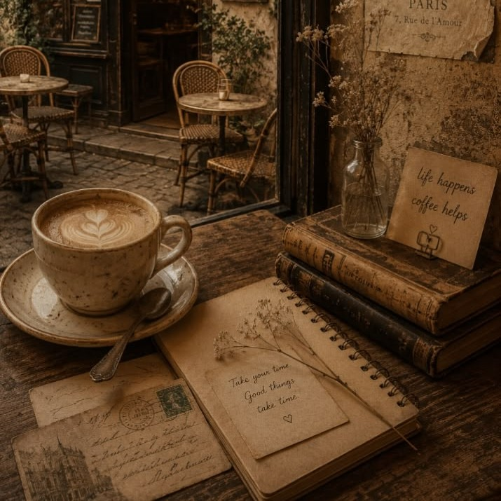
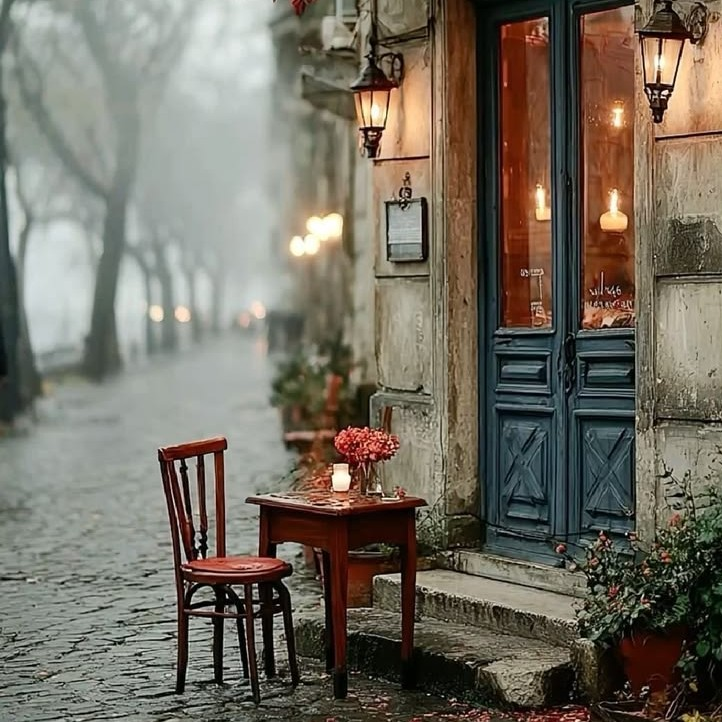
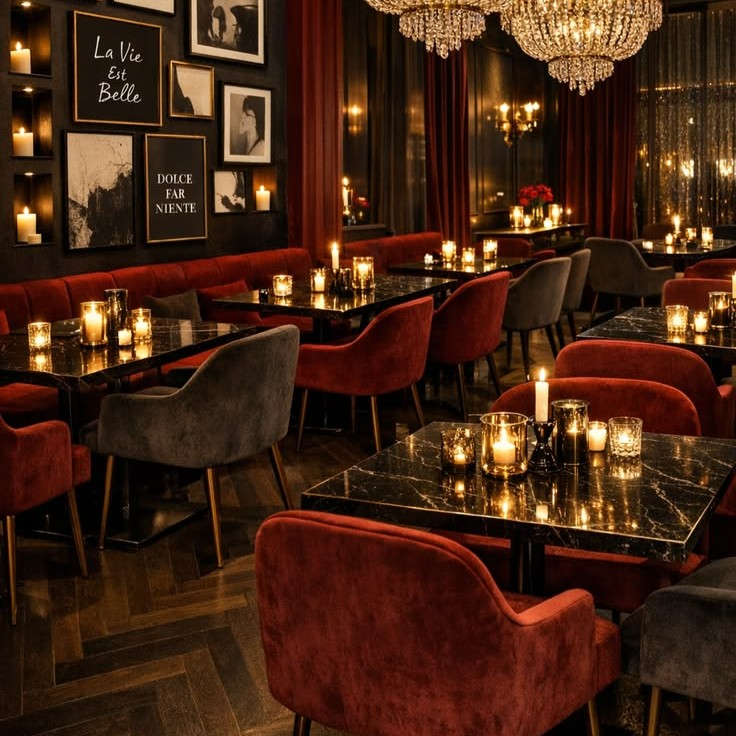
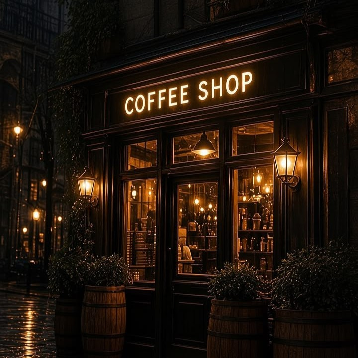
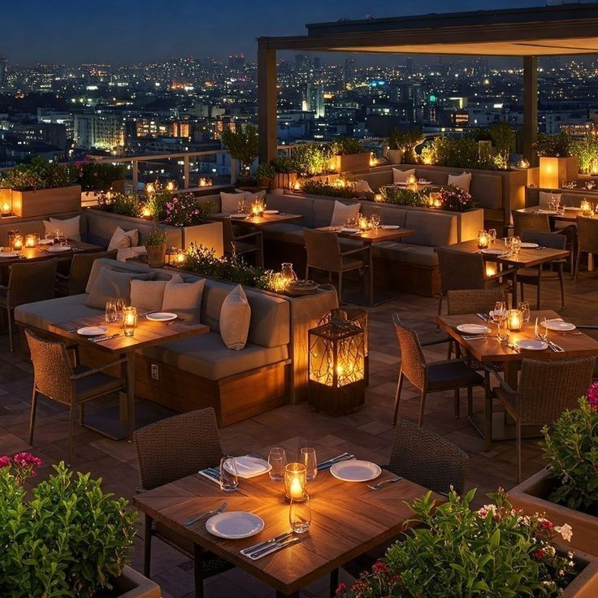

5+
سال تجربه در پذیرایی
1000+
مشتری راضی و وفادار
50+
آیتم متنوع در منو
کلمه لاتین هیون به معنای پناهگاه، لندرگاه و جای امن هست. کافه هیون جاییه که با هر حس و حالی واردش بشی، قراره خوشحال و پرانرژی بیرون بیای. حالا این خوشحالی به بهانه یه چای دبش باشه، به بهانه یه فضای قشنگ باشه، به بهانه صحبت کردن با یه دوست باشه، هرچیزی، کافه هیون همانطور که از ریشه کلمش پیداست، پناهگاه تو در برابر سختی ها و مشکلات بیرون از کافه خواهد بود. در ادامه بیشتر با داستان کافه هیون آشنا میشی تا آگاهانه تر به کلبه ما تشریف بیاری و با حضور قشنگت به کافمون برکت ببخشی:)
کافه هیون در شهریور سال 1400، با یه ایده خیلی آرمانی تاسیس شد. هدف ما از ساخت این کافه این بود که بتونیم یه فضایی ایجاد کنیم تا وقتی مشتریان گرامیمون واردش میشن بتونن برای لحظه ای هم که شده از مشکلات متعددی که باهاشون سر و کار دارن فاصله بگیرن و طعم زیبای آرامش رو بچشن. ما فعالیتمونو با یه اکیپ خیلی گرم و صمیمی در یک مکان خوش آب و هوا نزدیک شهر رشت شروع کردیم. به عنوان یه کسب و کار نوپا، نسبت به روزای اولمون پیشرفت چشمگیری داشتیم. مشتریان عزیزمون روز افزون زیاد میشدن و ما پرسنل بیشتری استخدام میکردیم. خیلی از عزیزانی که اون ایام اتفاقی برای تست و امتحان یه کافه ساده به کلبه ما اومدن، امروزه از طرفداران دائمی کافه هیون محسوب میشن. خلاصه ما تا قبل نوروز سال 1402 به فعالیتمون در اون مکان گرانقدر ادامه دادیم.


در تیرماه سال 1402، کافه هیون به دهکده جنگلی مارشال در نزدیکی شهر فومن منتفل شد. مکانی قشنگ تر، بزرگ تر و مهم تر از همه بسیار خوش آب و هوا. اکثر مشتریان شعبه قبلی، بار دیگر در این مکان زیبا به کلبه ما پیوستن و از تغییرات شکل گرفته بسیار راضی بودن. این مکان جدید برای تیممون شرایط ارائه امکانات و خدمات گسترده تر رو فراهم کرد. ما اتاق مخصوص کاپل ها رو به کافمون اضافه کردیم تا زوج های گرامی بدون نگرانی از نگاه دیگران، بتونن لحظات عاشقانه ای رو در کنار هم بگذرونن. اتاقی مخصوص بازی های تک نفره و تیمی ایجاد کردیم تا مشتریانمون بتونن در کنار صرف آیتم های منو، با بازی های جذاب سرگرم بشن. گسترش منو، بهبود دیزاین و استخدام کارمندان بیشتر رو میشه به عنوان دیگر تغییرات این شعبه نام برد.



امروزه مشتریان زیادی از سراسر ایران کافه هیون رو انتخاب میکنن. تیم ما با اعتماد شما همراهان گرامی، همه روزه سعی در توسعه و بهبود خدمات داره و هیچ وقت دست از تلاش برنمیداره. شما عزیزان میتونید با مراجعه به کافه هیون، از نزدیک شاهد زیبایی های این مجموعه باشید. پس بشتاب که چایی دبش آتیشی ای که برات دم کردیم، منتظرته:)
5+
سال تجربه در پذیرایی
1000+
مشتری راضی و وفادار
50+
آیتم متنوع در منو
کافه هیون منتظر حضور دلنشین توست